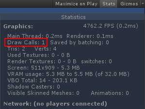
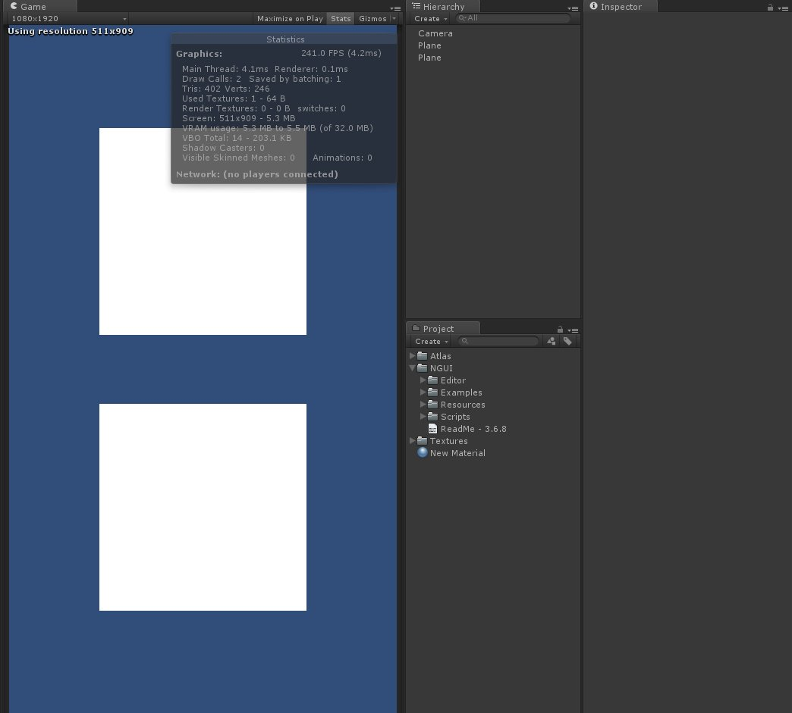
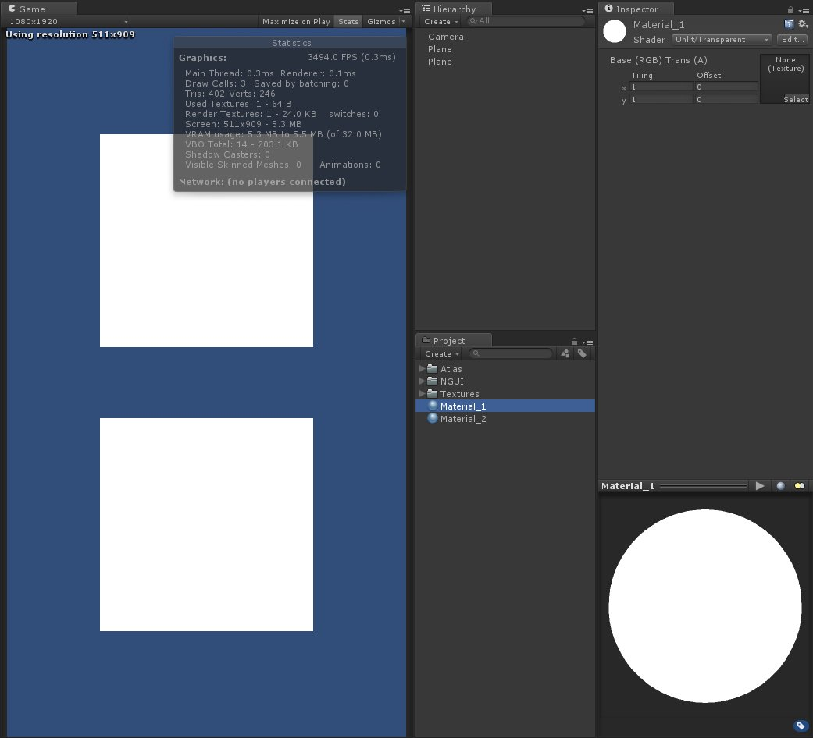
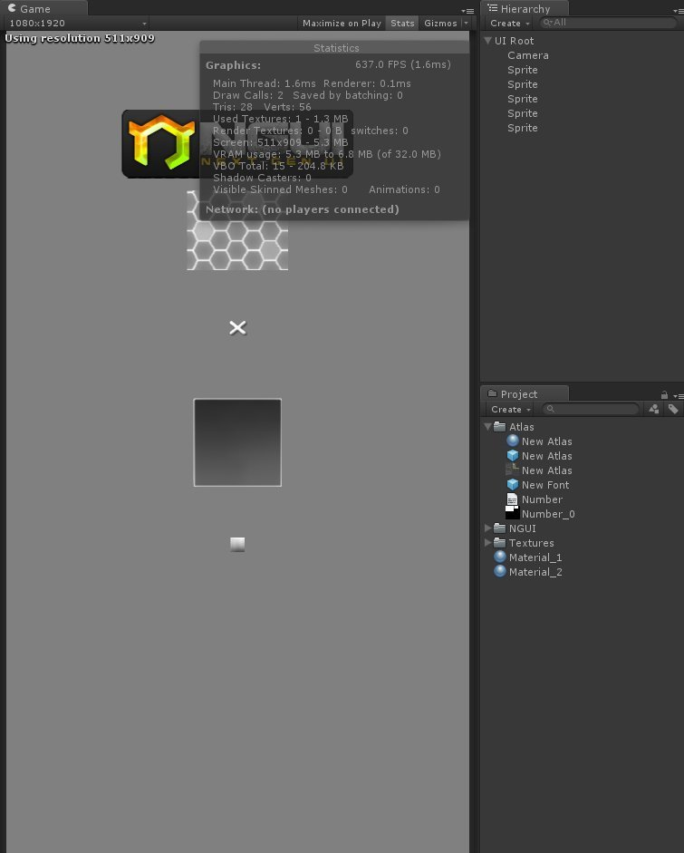

由於 NGUI 系列教學中都是想到什麼就寫什麼
如果覺得順序很奇怪的麻煩見諒 XD
在初步講解 Draw Call 時需聲明一下，在這裡所說的只是我自己對 Draw Call 的理解
如果有說錯或是理解錯誤
麻煩各位一起提出來討論 ^^

網路上常常可以看到這種說明
Draw Call 是在評估效能時一個相當重要的指標
Draw Call 越高代表越吃效能，相對的 Draw Calls 越低代表效能越好
但什麼是 Draw Call ?
一個 Draw Call，等於一次從 Shader 到顯示之間的轉換
渲染場景時，在 Unity 當中已經幫我們省略了很多步驟
來看看以下這個場景

場景中有兩個簡單的平面共用同一個材質 Material_1
Draw Call 為 2
原因是兩者的材質共用，所以渲染路徑相同
將其中的一個材質替換為 Material_2 後 ( Material_1、Material_2 Shader 相同 )

場景中的 Draw Call 變為 3
說明了就算 Shader 相同，渲染路徑不同一樣會造成 Draw Call 的產生
看到這裡對於前面幾篇中的圖集是不是突然有所理解
因為相同圖集內的圖片都會對應到同一個材質
所以透過將圖片打包成圖集來降低 Draw Call 的產生
接下來看看簡單的 NGUI 場景

場景中有多張圖片
但 Draw Call 維持在 2
這就是將圖片整理打包成圖集的好處
但 NGUI 並不是萬能的
之後會來提提在 NGUI 中 Draw Call 的陷阱